Gallery
Welcome to the Gallery. Here are contributions from our dedicated towns people! They have sent in drawings, photographs, their literal hearts, to let you know all of what Night Vale has in store for you! From landmarks to the members of the community, we know you'll love what you'll see, if you have eyes that is.
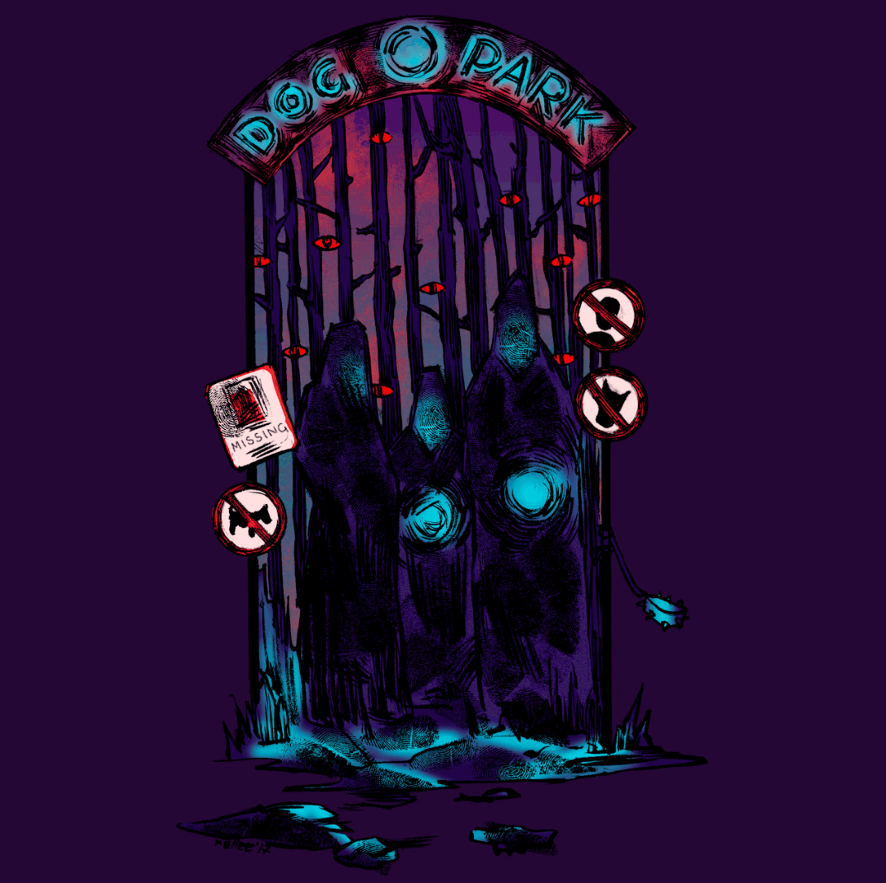
By xallee
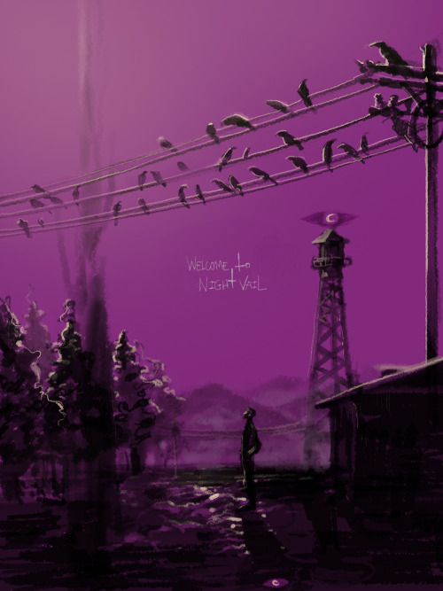
By pigeon666
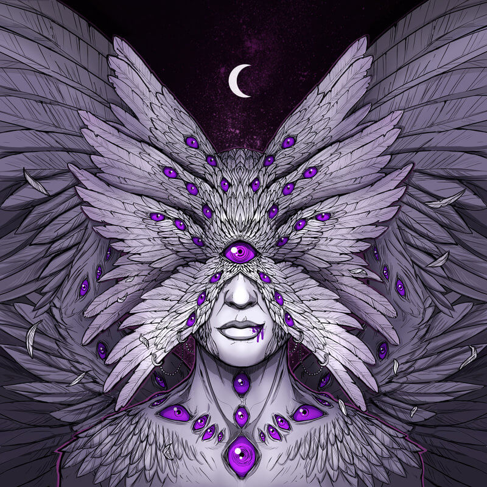
By deems
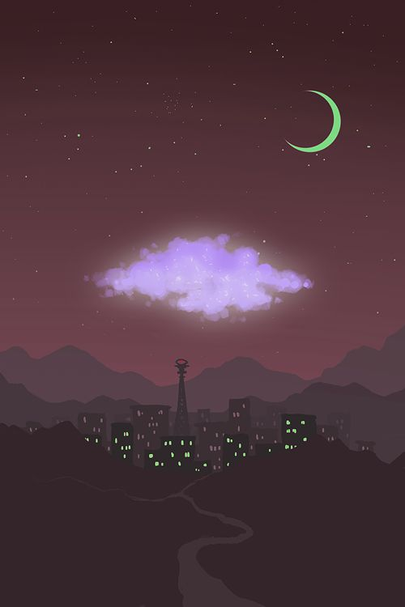
By doodle-kocha
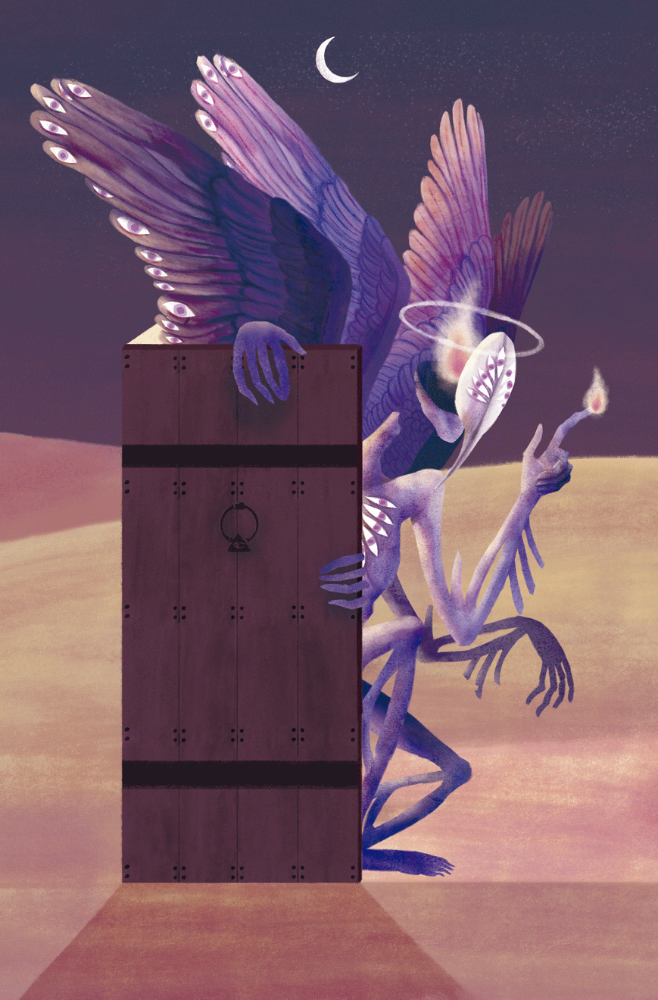
By thermidorette
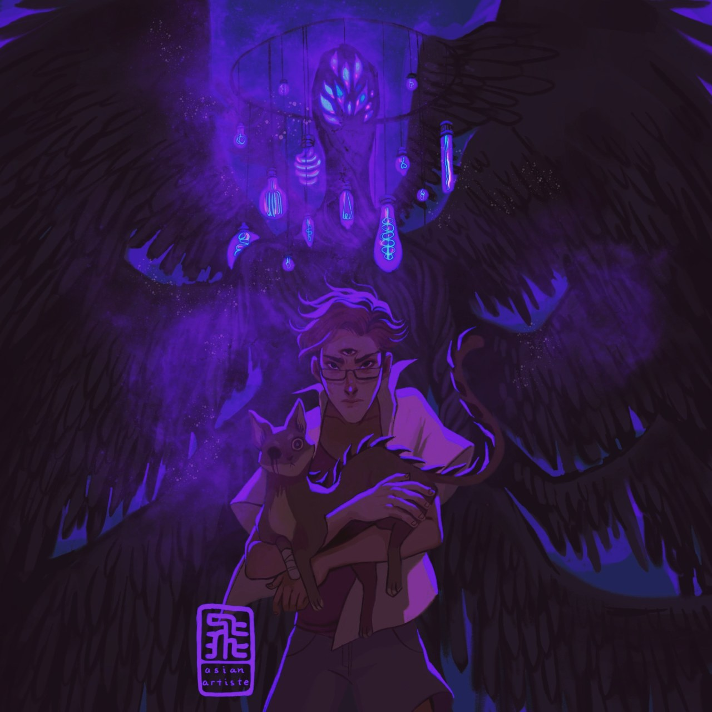
By asianartiste
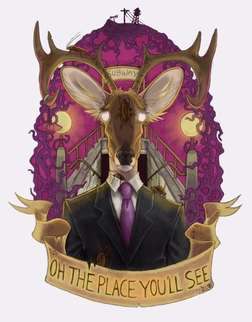
By horrible-frog-ornament
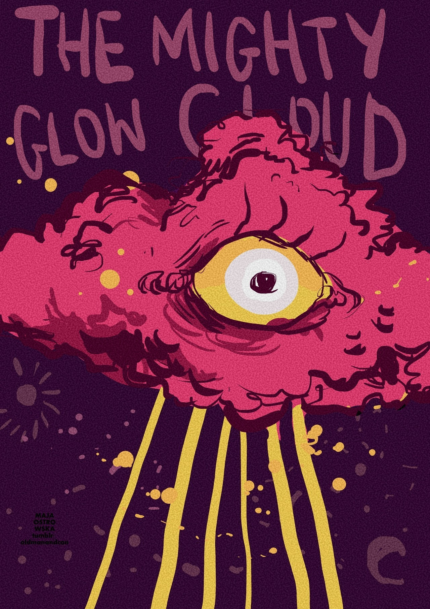
By mostrovska
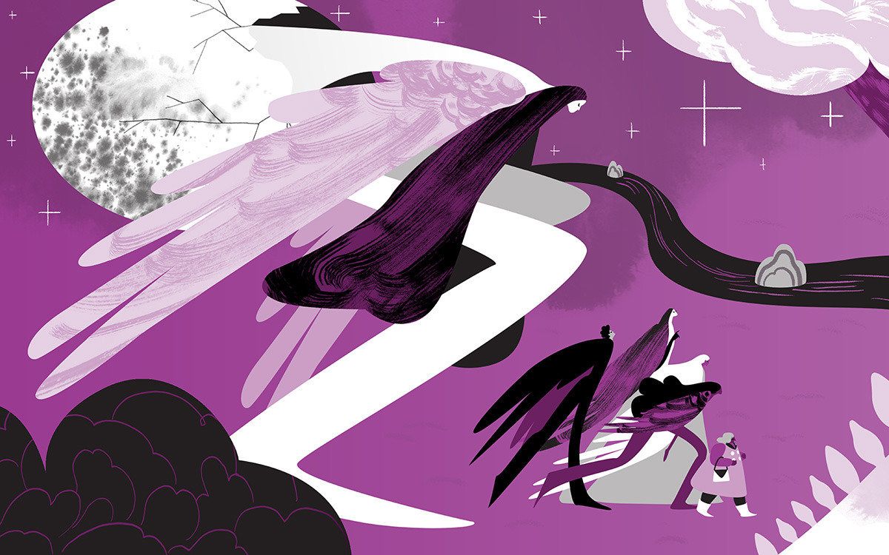
By idlepassage
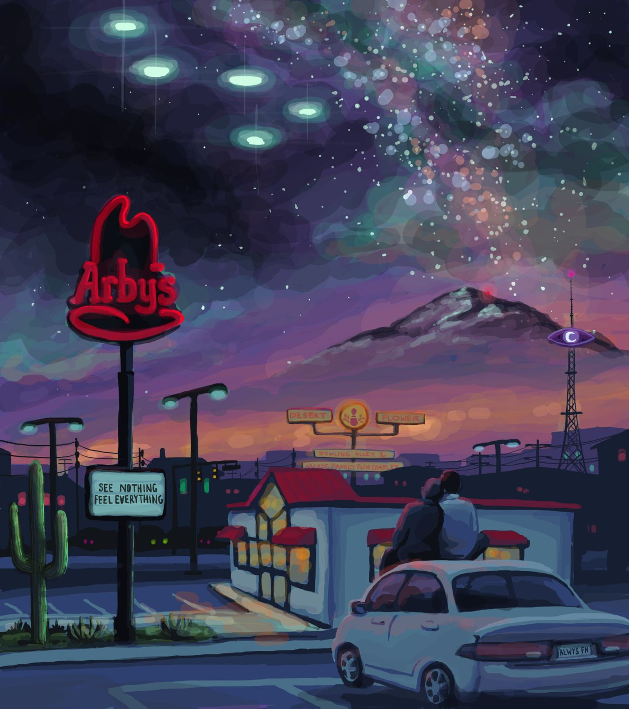
By scaryliterary
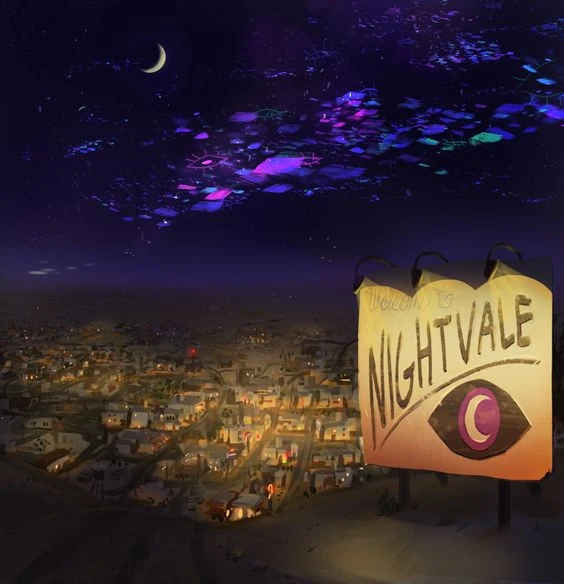
By albrii
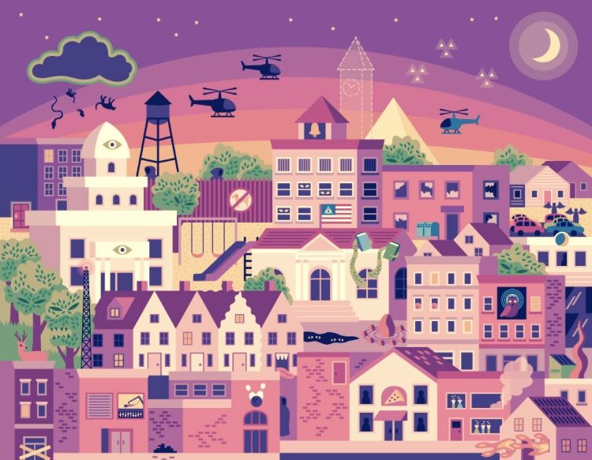
By Anonymous
List of all the Weather
Here you'll find all our weather and their artists! Check them out!